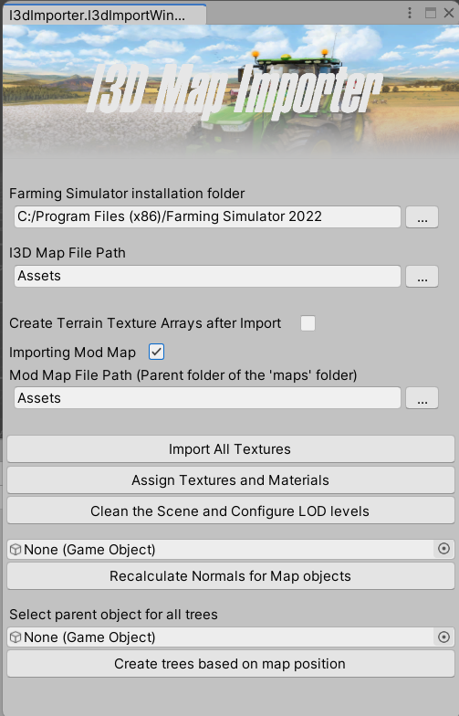

Farming Simulator Map Converter for Unity
For my major's thesis project, i worked at CNH Industrial to develop virtual functionalities in their new Dynamic Simulator. A part of that time was spent developing a workflow that could somewhat automate the creation of new virtual scenarios.

The result of that process was a Unity Editor Tool that could handle raw OBJ meshes from the
Farming Simulator modding assets, fixing artifacts and automatically texturing them using the
game's own files.
Notable developed features:
- The tool can be used to import both official and unofficial (modded) scenarios, making it more versatile.
- ShaderGraph was used to create new shaders that apply the game's native textures according to their configuration.